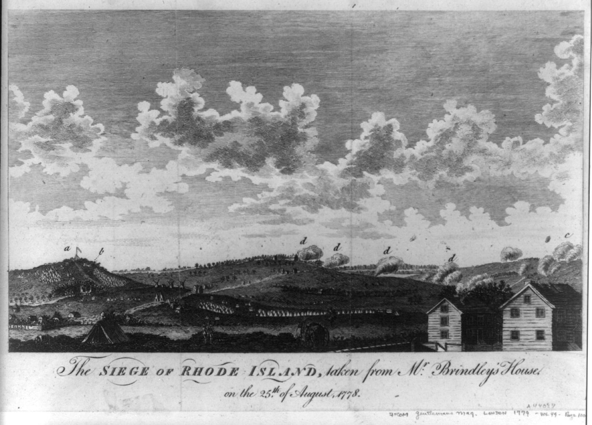
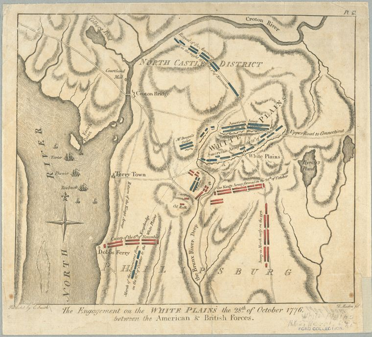
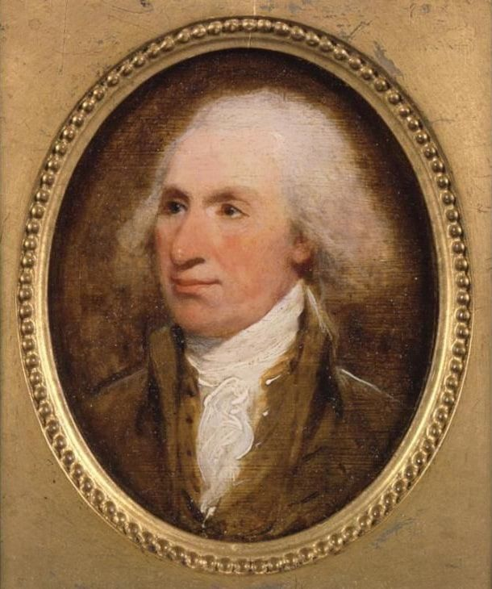

Biography
John Tufts of Windham, Connecticut, served three tours: north to Ticonderoga in 1775, the siege of Boston and New York in 1776, and the Hudson Highlands in 1778.
Service Record
Town: Windham, Conn.; Ashford; Stephentown, N.Y.; Ludlow, Mass. · Dates: 1755 – after 1835
Born 25 Oct. 1755 in Windham, Conn.; died after 1835 in Ludlow, Mass. (pension file NADC 10417 is cited). (Tufts Kinsmen, Vol. I, p. 133, family no. 22-1)
April 1775 volunteered for six months in Capt. Starr’s Co., Col. Hinman’s Regt., Connecticut militia; marched by Kent and Canaan, Conn., Stockbridge and Sheffield, Mass., Albany, and Fort George under Gen. Philip Schuyler, to Fort Ticonderoga until discharged. (Tufts Kinsmen, Vol. I, p. 133, family no. 22-1)
January 1776 in Col. Webb’s Regt. (Capt. Leavinsworth); at Roxbury until the British left Boston in March 1776; then entrenchments at Providence, R.I.; shipped from New London to join the army on Long Island but fell sick, was sent to a New York hospital, and went home in the fall of 1776. (Tufts Kinsmen, Vol. I, p. 133, family no. 22-1)
Spring 1778, substitute for a Pomfret draftee in Capt. Daniel Allen’s Co., Col. Wylly’s Regt., Gen. Parsons’s Brigade: West Point, White Plains, and Quaker Hill. Moved to Ashford 1786, Stephentown, N.Y., and Ludlow, Mass., 1818; head of household 1820. (Tufts Kinsmen, Vol. I, p. 133, family no. 22-1)
Family Connection
Family number 22-1 in Tufts Kinsmen, Vol. I. Parents are not named in the extract seen.
Spouse(s)
Not found in the sources checked (Brooks 1855 Register of Families; Wild; Find a Grave data on file; Tufts Kinsmen Vol. I extract).
Authoritative IDs / Index Numbers
| Source | ID / status |
|---|---|
| Perseus person index (auth=) | auth=tufts,john. This is a name-level key shared by every John Tufts in Perseus, not a personal ID. Use it with the passages cited on this page. |
| Find a Grave memorial | Note: Pending further work. |
| Brooks, History of Medford (1855) register no. | Checked, no entry confidently matched |
| Tufts Kinsmen, Vol. I family no. | 22-1 |
| Mass. Soldiers and Sailors | Not yet checked for this page |
| DAR ancestor no. | Note: Pending further work. |
| FamilySearch ID | Note: Pending further work. |
| Geni profile | Note: Pending further work. |
| WikiTree ID | Note: Pending further work. |
| Town / vital records | Medford VRs not yet checked by volume and page |
Only IDs confirmed against dates and family are given as matches. “Not yet checked” means the source has not been searched; “Checked, not found” means it was searched without a match.
⚑ Unverified
No other source on this site has yet been checked for this man.
Pictures








